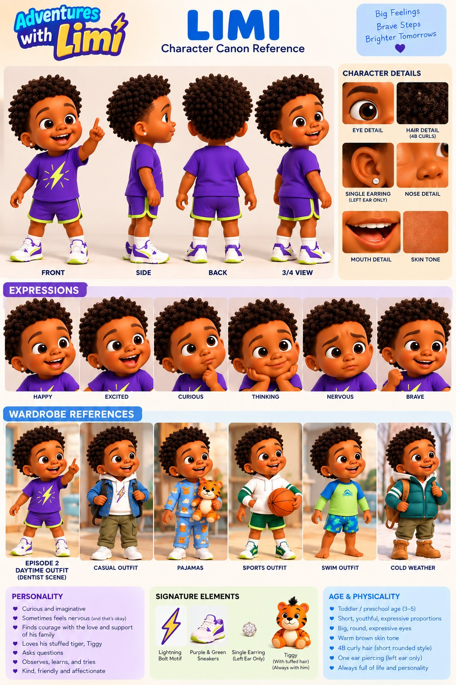
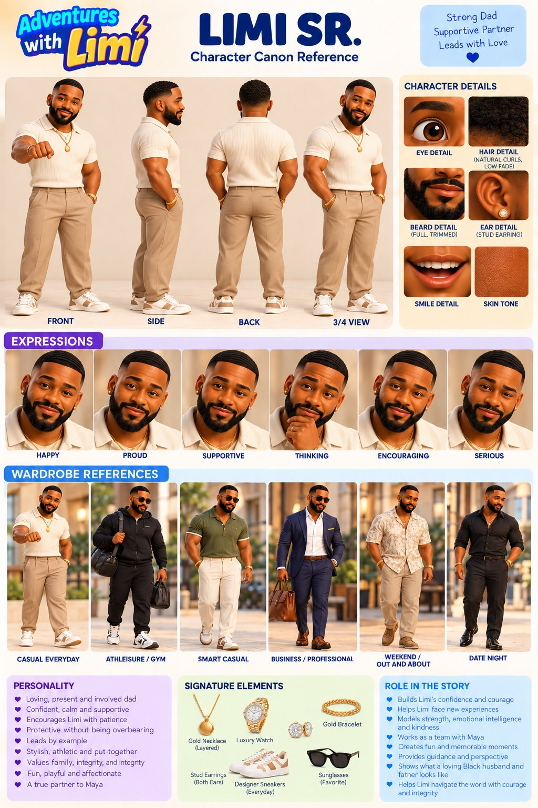
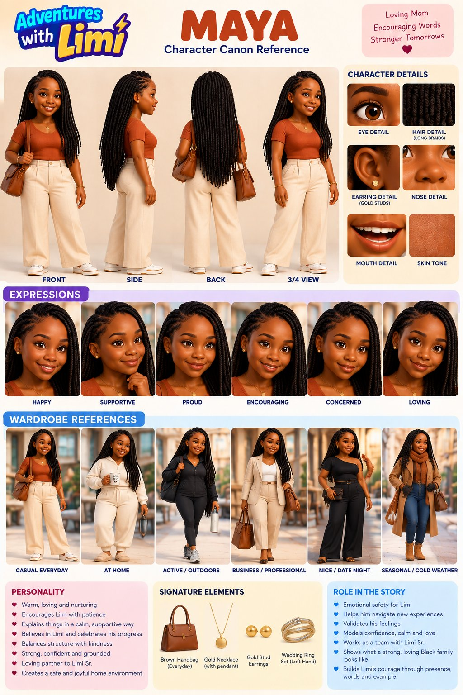
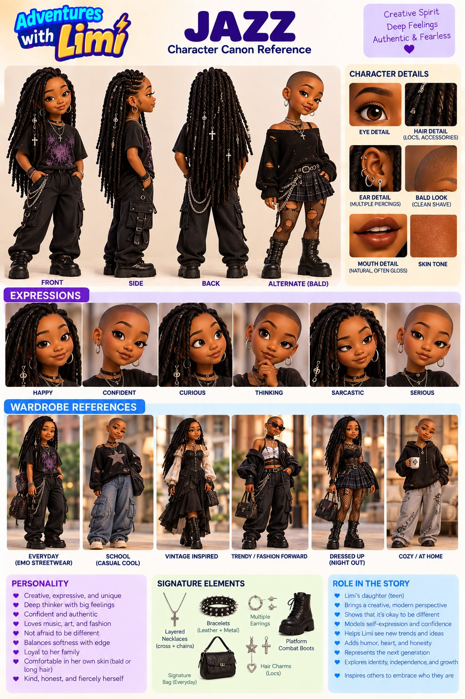
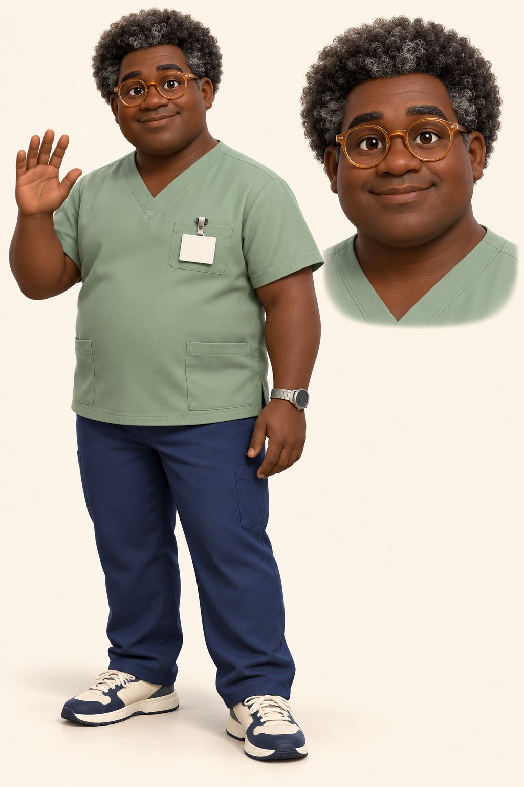

Character boards. Every prompt must carry the full locked description for each visible character, with the approved reference image attached.

Main character · Limi Jr. · toddler, about 2–3
Pronounced LEE-mee. Always spelled Limi, never Lemi or Lemmy. Catchphrase: “Let’s light it up!”

Father · late 30s · about 6'2", athletic
No tattoos. Low fade with crisp low waves. Main outfit is the cream polo from the canon sheet.

Mother · mid-30s
Morning-brush blue robe is not yet in the bible. Document it as a story-approved wardrobe change before use.

Big sister · Jasmine · 16
Edgier, expressive streetwear. Alternate look: clean-shaved bald. She is Limi’s sister, not his daughter.

Pediatric dentist · Episode 002 · V4 canonical
Voice by James: softer, slower, gentler than Limi Sr.
Barber · older
No approved concept image yet. Generate one, check it against this list, then lock it.